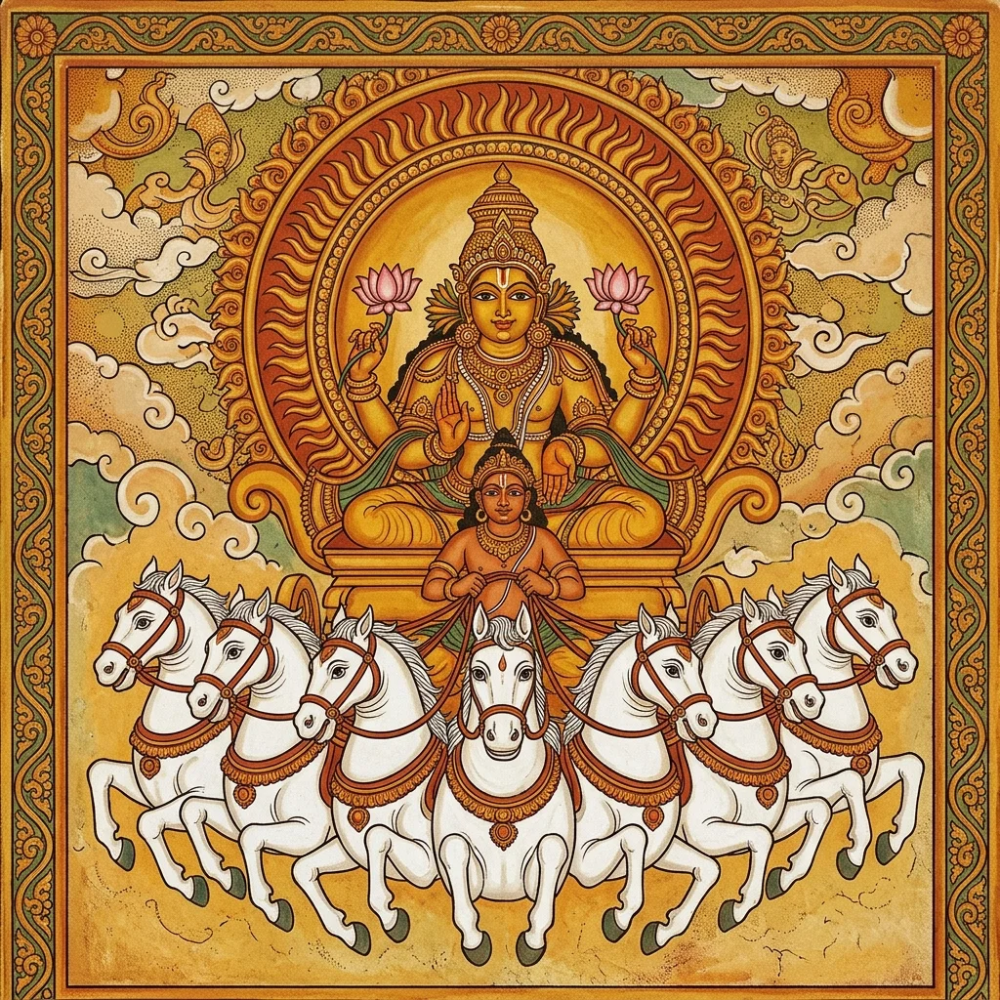

तैत्तिरीय ब्राह्मणे काठके प्रथमः प्रश्नः (सावित्रचयनम्)

3.10. तैत्तरीय यजुर्ब्राह्मणे काठके प्रथमः प्रश्नः( सावित्रचयनम्)
T.B.3.10.1.1
सं॒.ज्ञानं॑ ँवि॒ज्ञानं॑ प्र॒ज्ञानं॑ जा॒न-द॑भिजा॒नत् । स॒ङ्कल्प॑मानं प्र॒कल्प॑मान-मुप॒कल्प॑मान॒-मुप॑क्लृप्तं क्लृ॒प्तं । श्रेयो॒ वसी॑य आ॒यथ्संभू॑तं भू॒तं ॥ चि॒त्रः के॒तुः प्र॒भा-ना॒भान्थ् स॒भांन् । ज्योति॑ष्मा॒ꣴ॒-स्तेज॑स्वा-ना॒तप॒ꣴ॒-स्तप॑न्नभि॒तपन्न्॑ । रो॒च॒नो रोच॑मानः-शोभ॒नः-शोभ॑मानः क॒ल्याणः॑ ॥ दर्.शा॑ दृ॒ष्टा द॑र्.श॒ता वि॒श्वरू॑पा सुदर्.श॒ना । आ॒प्याय॑माना॒ प्याय॑माना॒-प्याया॑ सू॒नृतेरा᳚ । आ॒पूर्य॑माणा॒ पूर्य॑माणा पू॒रय॑न्ती पू॒र्णा पौ᳚र्णमा॒सी ॥ दा॒ता प्र॑दा॒ताऽऽन॒न्दो मोदः॑ प्रमो॒दः । 1 (10)
T.B.3.10.1.2
आ॒वे॒शय॑न् निवे॒शयन्᳚थ्स॒म् ँवेश॑नः॒ सꣳशा᳚न्तः शा॒न्तः । आ॒भव॑न् प्र॒भवन्᳚-थ्स॒भंव॒न्-थ्संभू॑तो भू॒तः ॥ प्रस्तु॑तं॒ ँविष्टु॑त॒ꣳ॒ सꣴस्तु॑तं क॒ल्याणं॑ ँवि॒श्वरू॑पं । शु॒क्रम॒मृतं॑ तेज॒स्वि तेजः॒ समि॑द्धं । अ॒रु॒णं भा॑नु॒मन् मरी॑चिमदभि॒तप॒त् तप॑स्वत् ॥ स॒वि॒ता प्र॑सवि॒ता दी॒प्तो दी॒पय॒न् दीप्य॑मानः । ज्वल॑न् ज्वलि॒ता तप॑न् वि॒तपन्᳚-थ्स॒न्तपन्न्॑ । रो॒च॒नो रोच॑मानः शु॒भूंः शुंभ॑मानो वा॒मः ॥ सु॒ता सु॑न्व॒ती प्रसु॑ता सू॒यमा॑ना ऽभिषू॒यमा॑णा । पीती᳚ प्र॒पा स॒पां तृप्ति॑-स्त॒र्पय॑न्ती । 2 (10)
T.B.3.10.1.3
का॒न्ता का॒म्या का॒मजा॒ता ऽऽयु॑ष्मती काम॒दुघा᳚ ॥ अ॒भि॒शा॒स्ता ऽनु॑म॒न्ता-ऽऽन॒न्दो मोदः॑ प्रमो॒दः । आ॒सा॒दय॑न् निषा॒दयन्᳚-थ्स॒ꣳ॒साद॑नः॒ सꣳस॑न्नः स॒न्नः । आ॒भूर् वि॒भूः प्र॒भूः श॒भूंर्भुवः॑ ॥ प॒वित्रं॑ पवयि॒ष्यन् पू॒तो मेद्ध्यः॑ । यशो॒ यश॑स्वा-ना॒युर॒मृतः॑ । जी॒वो जी॑वि॒ष्यन् थ्स्व॒र्गो लो॒कः ॥ सह॑स्वा॒न् थ्सही॑या॒-नोज॑स्वा॒न् थ्सह॑मानः । जय॑न्न-भि॒जयन्᳚-थ्सु॒द्रवि॑णो द्रविणो॒दाः । आ॒र्द्रप॑वित्रो॒ हरि॑केशो॒ मोदः॑ प्रमो॒दः ॥ 3 (10)
T.B.3.10.1.4
अ॒रु॒णो॑ ऽरु॒णर॑जाः पु॒ण्डरी॑को विश्व॒जि-द॑भि॒जित् । आ॒र्द्रः पिन्व॑मा॒नो ऽन्न॑वा॒न्-रस॑वा॒-निरा॑वान् । स॒र्वौ॒ष॒धः स॑भं॒रो मह॑स्वान् ॥ ए॒ज॒त्का जो॑व॒त्काः । क्षु॒ल्ल॒काः शि॑पिविष्ट॒काः । स॒रि॒स्त्र॒राः सु॒शेर॑वः । अ॒जि॒रासो॑ गमि॒ष्णवः॑ ॥ इ॒दानीं᳚ त॒दानी॑-मे॒तर्.हि॑ क्षि॒प्रम॑जि॒रं । आ॒शुर् नि॑मे॒षः फ॒णो द्रव॑न्नति॒-द्रवन्न्॑ । त्वर॒ꣴ॒ स्त्वर॑माण आ॒शु-राशी॑याञ्ज॒वः ( ) ॥ अ॒ग्नि॒ष्टो॒म उ॒क्थ्यो॑ ऽतिरा॒त्रो द्वि॑रा॒त्र-स्त्रि॑रा॒त्र-श्च॑तूरा॒त्रः । अ॒ग्निर्. ऋ॒तुः सूर्य॑ ऋ॒तुश्च॒न्द्रमा॑ ऋ॒तुः ॥ प्र॒जाप॑तिः सम् ँवथ्स॒रो म॒हान्कः ॥ 4 (13)
स्वयमातृण्णोपधानं चोच्यते
T.B.3.10.2.1
भूर॒ग्निं च॑ पृथि॒वीं च॒ मां च॑ । त्रीꣴश्च॑ लो॒कान् थ्स॑म् ँवथ्स॒रं च॑ । प्र॒जाप॑तिस्त्वा सादयतु । तया॑ दे॒वत॑या ऽङ्गिर॒स्वद्-ध्रु॒वा सी॑द ॥ भुवो॑ वा॒युं चा॒न्तरि॑क्षं च॒ मां च॑ । त्रीꣴश्च॑ लो॒कान् थ्स॑म् ँवथ्स॒रं च॑ । प्र॒जाप॑तिस्त्वा सादयतु । तया॑ दे॒वत॑याऽ ङ्गिर॒स्वद् ध्रु॒वा सी॑द । स्व॑रादि॒त्यं च॒ दिवं॑ च॒ मां च॑ । त्रीꣴश्च॑ लो॒कान् थ्स॑म् ँवथ्स॒रं च॑ ( ) । प्र॒जाप॑तिस्त्वा सादयतु । तया॑ दे॒वत॑या ऽङ्गिर॒स्वद् ध्रु॒वा सी॑द । भूर्भुवः॒ स्व॑-श्च॒न्द्रम॑सं च॒ दिश॑श्च॒ मां च॑ । त्रीꣴश्च॑ लो॒कान् थ्स॑वंथ्स॒रं च॑ । प्र॒जाप॑तिस्त्वा सादयतु । तया॑ दे॒वत॑या ऽङ्गिर॒स्वद् ध्रु॒वा सी॑द ॥ 5 (16)
T.B.3.10.3.1
त्वमे॒व त्वां ँवे᳚त्थ॒ यो॑ऽसि॒ सोऽसि॑ । त्वमे॒व त्वा-म॑चैषीः । चि॒तश्चासि॒ सच॑त-श्चास्यग्ने । ए॒तावा॒ꣴ॒श्चासि॒ भूयाꣴ॑श्चास्यग्ने । यत्ते॑ अग्ने॒ न्यू॑नं॒ ँयदु॒ तेऽति॑रिक्तं । आ॒दि॒त्या-स्तदङ्गि॑रस-श्चिन्वन्तु । विश्वे॑ ते दे॒वाश्चिति॒-मापू॑रयन्तु । चि॒तश्चासि॒ सच॑त-श्चास्यग्ने । ए॒तावा॒ꣴ॒श्चासि॒ भूयाꣴ॑श्चास्यग्ने । मा ते॑ अग्ने ऽच॒येन॒ माऽति॑ च॒ येनायु॒-रावृ॑क्षि ( ) । सव॑र्षां॒ ज्योति॑षां॒ ज्योति॒र् यद॒दावु॒देति॑ । तप॑सो जा॒तमनि॑भृष्ट॒-मोजः॑। तत्ते॒ ज्योति॑रिष्टके । तेन॑ मे तप । तेन॑ मे ज्वल । तेन॑ मे दीदिहि । याव॑द्दे॒वाः । याव॒दसा॑ति॒ सूर्यः॑ । याव॑दु॒तापि॒ ब्रह्म॑ ॥ 6 (19)
T.B.3.10.4.1
स॒म् ँव॒थ्स॒रो॑ऽसि परिवथ्स॒रो॑ऽसि । इ॒दा॒व॒थ्स॒रो॑ऽसीदुवथ्स॒रो॑ऽसि । इ॒द्व॒थ्स॒रो॑ऽसि वथ्स॒रो॑ऽसि । तस्य॑ ते वस॒न्तः शिरः॑ । ग्री॒ष्मो दक्षि॑णः प॒क्षः । व॒र॒.षाः पुच्छं᳚ । श॒रदुत्त॑रः प॒क्षः । हे॒म॒न्तो मद्ध्यं᳚ । पू॒र्व॒प॒क्षाश्चित॑यः । अ॒प॒र॒प॒क्षाः पुरी॑षं । 7 (10)
T.B.3.10.4.2
अ॒हो॒रा॒त्रा-णीष्ट॑काः । ऋ॒ष॒भो॑ऽसि स्व॒र्गो लो॒कः । यस्यां᳚ दि॒शि म॒हीय॑से । ततो॑ नो॒ मह॒ आव॑ह । वा॒युर्भू॒त्वा सर्वा॒ दिश॒ आवा॑हि । सर्वा॒ दिशोऽनु॒ विवा॑हि । सर्वा॒ दिशोऽनु॒ सम् ँवा॑हि । चित्त्या॒ चिति॒-मापृ॑ण । अचि॑त्त्या॒ चिति॒-मापृ॑ण । चिद॑सि समु॒द्रयो॑निः । 8 (10)
T.B.3.10.4.3
इन्दु॒र्दक्षः॑ श्ये॒न ऋ॒तावा᳚ । हिर॑ण्यपक्षः शकु॒नो भु॑र॒ण्युः । म॒हान् थ्स॒धस्थे᳚ ध्रु॒व आनिष॑त्तः । नम॑स्ते अस्तु॒ मा मा॑ हिꣳसीः । एति॒ प्रेति॒ वीति॒ समित्युदिति॑ । दिवं॑ मे यच्छ । अ॒न्तरि॑क्षं मे यच्छ । पृ॒थि॒वीं मे॑ यच्छ । पृ॒थि॒वीं मे॑ यच्छ । अ॒न्तरि॑क्षं मे यच्छ ( ) । दिवं॑ मे यच्छ । अह्ना॒ प्रसा॑रय । रात्र्या॒ सम॑च । रात्र्या॒ प्रसा॑रय । अह्ना॒ सम॑च । कामं॒ प्रसा॑रय । काम॒ꣳ॒ सम॑च ॥ 9 (17)
स्वयमातृण्णोपधानं चोच्यते
T.B.3.10.5.1
भूर्भुवः॒ स्वः॑ । ओजो॒ बलं᳚ । ब्रह्म॑ क्ष॒त्रं । यशो॑ म॒हत् । स॒त्यं तपो॒ नाम॑ । रू॒प-म॒मृतं᳚ । चक्षुः॒ श्रोत्रं᳚ । मन॒ आयुः॑ । विश्वं॒ ँयशो॑ म॒हः । स॒मं तपो॒ हरो॒ भाः ( ) । जा॒तवे॑दा॒ यदि॑ वा पाव॒कोऽसि॑ । वै॒श्वा॒न॒रो यदि॑ वा वैद्यु॒तोऽसि॑ । शं प्र॒जाभ्यो॒ यज॑मानाय लो॒कं । ऊर्जं॒ पुष्टिं॒ दद॑-द॒भ्याव॑वृथ्स्व ॥ 10 (14)
स्वयमातृण्णोपधानं चोच्यते
T.B.3.10.6.1
राज्ञी॑ विराज्ञी᳚ । स॒म्राज्ञी᳚ स्व॒राज्ञी᳚ । अ॒र्चिः शो॒चिः । तपो॒ हरो॒ भाः । अ॒ग्नि-रिन्द्रो॒ बृह॒स्पतिः॑ । विश्वे॑ दे॒वा भुव॑नस्य गो॒पाः । ते मा॒ सर्वे॒ यश॑सा॒ सꣳसृ॑जन्तु ॥ 11 (7)
स्वयमातृण्णोपधानं चोच्यते
T.B.3.10.7.1
अस॑वे॒ स्वाहा॒ वस॑वे॒ स्वाहा᳚ । विभु॑वे॒ स्वाहा॒ विव॑स्वते॒ स्वाहा᳚ । अ॒भि॒भुवे॒ स्वाहा-ऽधि॑पतये॒ स्वाहा᳚ । दि॒वांपत॑ये॒ स्वाहा ऽꣳ॑हस्प॒त्याय॒ स्वाहा᳚ । चा॒क्षु॒ष्म॒त्याय॒ स्वाहा᳚ ज्योतिष्म॒त्याय॒ स्वाहा᳚ । राज्ञे॒ स्वाहा॑ वि॒राज्ञे॒ स्वाहा᳚ । स॒म्राज्ञे॒ स्वाहा᳚ स्व॒राज्ञे॒ स्वाहा᳚ । शूषा॑य॒ स्वाहा॒ सूर्या॑य॒ स्वाहा᳚ । च॒न्द्रम॑से॒ स्वाहा॒ ज्योति॑षे॒ स्वाहा᳚ । स॒ꣳ॒सर्पा॑य॒ स्वाहा॑ क॒ल्याणा॑य॒ स्वाहा᳚ ( ) । अर्जु॑नाय॒ स्वाहा᳚ ॥ 12 (11)
T.B.3.10.8.1
वि॒प॒श्चिते॒ पव॑मानाय गायत । म॒ही न धारा ऽत्यन्धो॑ अर्.षति । अहि॑र्. ह जी॒र्णा-मति॑सर्पति॒ त्वचं᳚ । अत्यो॒ न क्रीड॑न्नसर॒द्-वृषा॒ हरिः॑ । उ॒प॒या॒मगृ॑हीतोऽसि मृ॒त्यवे᳚ त्वा॒ जुष्टं॑ गृह्णामि । ए॒ष ते॒ योनि॑र्मृ॒त्यवे᳚ त्वा ॥ अप॑ मृ॒त्यु-मप॒क्षुधं᳚ । अपे॒तः श॒पथं॑ जहि । अधा॑ नो अग्न॒ आव॑ह । रा॒यस्पोषꣳ॑ सह॒स्रिणं᳚ । 13 (10)
T.B.3.10.8.2
ये ते॑ स॒हस्र॑म॒युतं॒ पाशाः᳚ । मृत्यो॒ मर्त्या॑य॒ हन्त॑वे । तान्. य॒ज्ञस्य॑ मा॒यया᳚ । सर्वा॒नव॑यजामहे ॥ भ॒क्षो᳚ ऽस्यमृतभ॒क्षः । तस्य॑ ते मृ॒त्यु-पी॑तस्या॒-मृत॑वतः । स्व॒गा-कृ॑तस्य॒ मधु॑मतः । उप॑हूत॒स्योप॑हूतो भक्षयामि ॥ म॒न्द्रा ऽभिभू॑तिः के॒तुर् य॒ज्ञानां॒ ँवाक् । असा॒वेहि॑ । 14 (10)
T.B.3.10.8.3
अ॒न्धो जागृ॑विः प्राण । असा॒वेहि॑ । ब॒धि॒र आ᳚क्रन्दयित-रपान । असा॒वेहि॑ । अ॒ह॒स्तोस्त्वा॒ चक्षुः॑ । असा॒वेहि॑ । अ॒पा॒दाशो॒ मनः॑ । असा॒वेहि॑ । कवे॒ विप्र॑चित्ते॒ श्रोत्र॑ । असा॒वेहि॑ । 15 (10)
T.B.3.10.8.4
सु॒ह॒स्तः सु॑वा॒साः । शू॒षो नामा᳚स्य॒-मृतो॒ मर्त्ये॑षु । तन्त्वा॒ऽहं तथा॒ वेद॑ । असा॒वेहि॑ । अ॒ग्निर्मे॑ वा॒चि श्रि॒तः । वाग्घृद॑ये । हृद॑यं॒ मयि॑ । अ॒हम॒मृते᳚ । अ॒मृतं॒ ब्रह्म॑णि । वा॒युर्मे᳚ प्रा॒णे श्रि॒तः । 16 (10)
T.B.3.10.8.5
प्रा॒णो हृद॑ये । हृद॑यं॒ मयि॑ । अ॒हम॒मृते᳚ । अ॒मृतं॒ ब्रह्म॑णि । सूर्यो॑ मे॒ चक्षु॑षि श्रि॒तः । चक्षु॒र्॒. हृद॑ये । हृद॑यं॒ मयि॑ । अ॒हम॒मृते᳚ । अ॒मृतं॒ ब्रह्म॑णि । च॒न्द्रमा॑ मे॒ मन॑सि श्रि॒तः । 17 (10)
T.B.3.10.8.6
मनो॒ हृद॑ये । हृद॑यं॒ मयि॑ । अ॒हम॒मृते᳚ । अ॒मृतं॒ ब्रह्म॑णि । दिशो॑ मे॒ श्रोत्रे᳚ श्रि॒ताः । श्रोत्र॒ꣳ॒ हृद॑ये । हृद॑यं॒ मयि॑ । अ॒हम॒मृते᳚ । अ॒मृतं॒ ब्रह्म॑णि । आपो॑ मे॒ रेत॑सि श्रि॒ताः । 18 (10)
T.B.3.10.8.7
रेतो॒ हृद॑ये । हृद॑यं॒ मयि॑ । अ॒हम॒मृते᳚ । अ॒मृतं॒ ब्रह्म॑णि । पृ॒थि॒वी मे॒ शरी॑रे श्रि॒ता । शरी॑र॒ꣳ॒ हृद॑ये । हृद॑यं॒ मयि॑ । अ॒हम॒मृते᳚ । अ॒मृतं॒ ब्रह्म॑णि । ओ॒ष॒धि॒व॒न॒स्प॒तयो॑ मे॒ लोम॑सु श्रि॒ताः । 19 (10)
T.B.3.10.8.8
लोमा॑नि॒ हृद॑ये । हृद॑यं॒ मयि॑ । अ॒हम॒मृते᳚ । अ॒मृतं॒ ब्रह्म॑णि । इन्द्रो॑ मे॒ बले᳚ श्रि॒तः । बल॒ꣳ॒ हृद॑ये । हृद॑यं॒ मयि॑ । अ॒हम॒मृते᳚ । अ॒मृतं॒ ब्रह्म॑णि । प॒र्जन्यो॑ मे मू॒र्द्ध्नि श्रि॒तः । 20 (10)
T.B.3.10.8.9
मू॒र्द्धा हृद॑ये । हृद॑यं॒ मयि॑ । अ॒हम॒मृते᳚ । अ॒मृतं॒ ब्रह्म॑णि । ईशा॑नो मे म॒न्यौ श्रि॒तः । म॒न्युर्. हृद॑ये । हृद॑यं॒ मयि॑ । अ॒हम॒मृते᳚ । अ॒मृतं॒ ब्रह्म॑णि । आ॒त्मा म॑ आ॒त्मनि॑ श्रि॒तः( ) । 21 (10)
T.B.3.10.8.10
आ॒त्मा हृद॑ये । हृद॑यं॒ मयि॑ । अ॒हम॒मृते᳚ । अ॒मृतं॒ ब्रह्म॑णि । पुन॑र्म आ॒त्मा पुन॒रायु॒रागा᳚त् । पुनः॑ प्रा॒णः पुन॒राकू॑त॒-मागा᳚त् । वै॒श्वा॒न॒रो र॒श्मिभि॑र् वावृधा॒नः । अ॒न्तस्ति॑ष्ठत्व॒मृत॑स्य गो॒पाः ॥ 22 (8)
T.B.3.10.9.1
प्र॒जाप॑तिर् दे॒वान॑सृजत । ते पा॒प्मना॒ सन्दि॑ता अजायन्त । तान् व्य॑द्यत् । यद् व्य॒द्यत् । तस्मा᳚द् वि॒द्युत् । तम॑वृश्चत् । यदवृ॑श्चत् । तस्मा॒द् वृष्टिः॑ । तस्मा॒द् यत्रै॒ते दे॒वते॑ अभि॒प्राप्नु॑तः । वि च॑ है॒वास्य॒ तत्र॑ पा॒प्मान॒न्द्यतः॑ । 23 (10)
T.B.3.10.9.2
वृ॒श्चत॑श्च ॥ सैषा मी॑मा॒ꣳ॒साऽग्नि॑हो॒त्र ए॒व स॑पंन्ना । अथो॑ आहुः । सर्वे॑षु यज्ञक्र॒तुष्विति॑ ॥ होष्य॑न्न॒प उप॑स्पृशेत् । विद्यु॑दसि॒ विद्य॑मे पा॒प्मान॒मिति॑ । अथ॑ हु॒त्वोप॑स्पृशेत् । वृष्टि॑रसि॒ वृश्च॑ मे पा॒प्मान॒मिति॑ । य॒क्ष्यमा॑णो वे॒ष्ट्वा वा᳚ । वि च॑ है॒वास्यै॒ते दे॒वते॑ पा॒प्मानं॒ द्यतः॑ । 24 (10)
T.B.3.10.9.3
वृ॒श्चत॑श्च ॥ अ॒त्य॒ꣳ॒हो हारु॑णिः । ब्र॒ह्म॒चा॒रिणे᳚ प्र॒श्नान् प्रोच्य॒ प्रजि॑घाय । परे॑हि । प्ल॒क्षं दैय्यां᳚ पातिं पृच्छ । वेत्थ॑ सावि॒त्रां(3) न वे॒त्था(3) इति॑ । तमा॒गत्य॑ पप्रच्छ । आ॒चार्यो॑ मा॒ प्राहै॑षीत् । वेत्थ॑ सावि॒त्रां(3) न वे॒त्था(3) इति॑ । सहो॑वाच॒ वेदेति॑ ॥ 25 (10)
T.B.3.10.9.4
स कस्मि॒न् प्रति॑ष्ठित॒ इति॑ । प॒रोर॑ज॒सीति॑ । कस्तद्यत् प॒रोर॑जा॒ इति॑ । ए॒ष वाव स प॒रोर॑जा॒ इति॑ होवाच । य ए॒ष तप॑ति । ए॒षो᳚ ऽर्वाग्र॑जा॒ इति॑ । स कस्मि॑न् त्वे॒ष इति॑ । स॒त्य इति॑ । किं तथ्स॒त्यमिति॑ । तप॒ इति॑ । 26 (10)
T.B.3.10.9.5
कस्मि॒न्नु तप॒ इति॑ । बल॒ इति॑ । किं तद् बल॒मिति॑ । प्रा॒ण इति॑ । मा स्म॑ प्रा॒णमति॑ पृच्छ॒ इति॑ माऽऽचा॒र्यो᳚ ऽब्रवी॒दिति॑ होवाच ब्रह्मचा॒री ॥ सहो॑वाच प्ल॒क्षो दैय्यां᳚ पातिः । यद्वै ब्र॑ह्मचारिन् प्रा॒ण-मत्य॑प्रक्ष्यः । मू॒र्द्धा ते॒ व्यप॑तिष्यत् । अ॒हमु॑ त आचा॒र्या-च्छ्रेया᳚न् भविष्यामि । यो मा॑ सावि॒त्रे स॒मवा॑दि॒ष्टेति॑ । 27 (10)
T.B.3.10.9.6
तस्मा᳚थ् सावि॒त्रे न सम् ँव॑देत ॥ स यो ह॒वै सा॑वि॒त्रं ँवि॒दुषा॑ सावि॒त्रे स॒म् ँवद॑ते । सहा᳚स्मि॒-ञ्छ्रियं॑ दधाति । अनु॑ ह॒ वा अ॑स्मा अ॒सौ तप॒ञ्छ्रियं॑ मन्यते । अन्व॑स्मै॒ श्रीस्तपो॑ मन्यते । अन्व॑स्मै॒ तपो॒ बलं॑ मन्यते । अन्व॑स्मै॒ बलं॑ प्रा॒णं म॑न्यते ॥ स यदाह॑ । सं॒ज्ञानं॑ ँवि॒ज्ञानं॒ दर्.शा॑ दृ॒ष्टेति॑ । ए॒ष ए॒व तत् ॥ 28 (10)
T.B.3.10.9.7
अथ॒ यदाह॑ । प्रस्तु॑तं॒ ँविष्टु॑तꣳ सु॒ता सु॑न्व॒तीति॑ । ए॒ष ए॒व तत् ॥ ए॒ष ह्ये॑व तान्यहा॑नि । ए॒ष रात्र॑यः ॥ अथ॒ यदाह॑ । चि॒त्रः के॒तुर् दा॒ता प्र॑दा॒ता स॑वि॒ता प्र॑सवि॒ता ऽभि॑शा॒स्ता ऽनु॑म॒न्तेति॑ । ए॒ष ए॒व तत् । ए॒ष ह्ये॑व तेऽह्नो॑ मुहू॒र्ताः । ए॒ष रात्रेः᳚ ॥ 29 (10)
T.B.3.10.9.8
अथ॒ यदाह॑ । प॒वित्रं॑ पवयि॒ष्यन्-थ्सह॑स्वा॒न्-थ्सही॑या-नरु॒णो॑ ऽरु॒णर॑जा॒ इति॑ । ए॒ष ए॒व तत् । ए॒ष ह्ये॑व ते᳚ ऽर्द्धमा॒साः । ए॒ष मासाः᳚ ॥ अथ॒ यदाह॑ । अ॒ग्नि॒ष्टो॒म उ॒क्थ्यो᳚ऽग्निर्. ऋ॒तुः प्र॒जाप॑तिः सम् ँवथ्स॒र इति॑ । ए॒ष ए॒व तत् । ए॒ष ह्ये॑व ते य॑ज्ञक्र॒तवः॑ । ए॒ष ऋ॒तवः॑ । 30 (10)
T.B.3.10.9.9
ए॒ष स॑म् ँवथ्स॒रः ॥ अथ॒ यदाह॑ । इ॒दानीं᳚ त॒दानी॒मिति॑ । ए॒ष ए॒व तत् । ए॒ष ह्ये॑व ते मु॑हू॒र्तानां᳚ मुहू॒र्ताः ॥ ज॒न॒को ह॒ वैदे॑हः । अ॒हो॒रा॒त्रैः स॒माज॑गाम । तꣳ हो॑चुः । यो वा अ॒स्मान्. वेद॑ । वि॒जह॑त्-पा॒प्मान॑मेति । 31 (10)
T.B.3.10.9.10
सर्व॒-मायु॑रेति । अ॒भि स्व॒र्गं ँलो॒कं ज॑यति । नास्या॒-मुष्मि॑न् ँलो॒केऽन्नं॑ क्षीयत॒ इति॑ ॥ वि॒जह॑द्ध॒ वै पा॒प्मान॑मेति । सर्व॒मायु॑रेति । अ॒भि स्व॒र्गं ँलो॒कं ज॑यति । नास्या॒-मुष्मि॑न् ँलो॒के ऽन्नं॑ क्षीयते । य ए॒वं ँवेद॑ ॥ अही॑ना॒ हाश्व॑त्थ्यः । सा॒वि॒त्रं ँवि॒दां च॑कार । 32 (10)
T.B.3.10.9.11
स ह॑ ह॒ꣳ॒सो हि॑र॒ण्मयो॑ भू॒त्वा । स्व॒र्गं ँलो॒कमि॑याय । आ॒दि॒त्यस्य॒ सायु॑ज्यं ॥ ह॒ꣳ॒सो ह॒वै हि॑र॒ण्मयो॑ भू॒त्वा । स्व॒र्गं ँलो॒कमे॑ति । आ॒दि॒त्यस्य॒ सायु॑ज्यं । य ए॒वं ँवेद॑ ॥ दे॒व॒भा॒गो ह॑ श्रौत॒र्॒.षः । सा॒वि॒त्रं ँवि॒दां च॑कार । तꣳ ह॒ वागदृ॑श्यमा॒ना ऽभ्यु॑वाच । 33 (10)
T.B.3.10.9.12
सर्व॑म्बत गौत॒मो वे॑द । यः सा॑वि॒त्रं ँवेदेति॑ । स हो॑वाच । कैषा वाग॒सीति॑ । अ॒यम॒हꣳ सा॑वि॒त्रः । दे॒वाना॑-मुत्त॒मो लो॒कः । गुह्यं॒ महो॒ बिभ्र॒दिति॑ । ए॒ताव॑ति ह गौत॒मः । य॒ज्ञो॒प॒वी॒तं कृ॒त्वा-ऽधो निप॑पात । नमो॒ नम॒ इति॑ । 34 (10)
T.B.3.10.9.13
स हो॑वाच । मा भै॑षीर् गौतम । जि॒तो वै ते॑ लो॒क इति॑ ॥ तस्मा॒द्ये के च॑ सावि॒त्रं ँवि॒दुः । सर्वे॒ ते जि॒तलो॑काः ॥ स यो ह॒वै सा॑वि॒त्र-स्या॒ष्टाक्ष॑रं प॒दꣴ श्रि॒या ऽभिषि॑क्तं॒ ँवेद॑ । श्रि॒या है॒वाभिषि॑च्यते । घृणि॒रिति॒ द्वे अ॒क्षरे᳚ । सूर्य॒ इति॒ त्रीणि॑ । आ॒दि॒त्य इति॒ त्रीणि॑ । 35 (10)
T.B.3.10.9.14
ए॒तद्वै सा॑वि॒त्र-स्या॒ष्टाक्ष॑रं प॒दꣴ श्रि॒याभिषि॑क्तं । य ए॒वं ँवेद॑ । श्रि॒या है॒वाभिषि॑च्यते ॥ तदे॒-तदृ॒चा-ऽभ्यु॑क्तं । ऋ॒चो अ॒क्षरे॑ पर॒मे व्यो॑मन्न् । यस्मि॑न् दे॒वा अधि॒ विश्वे॑ निषे॒दुः । यस्तन्न वेद॒ किमृ॒चा क॑रिष्यति । य इत् तद्वि॒दुस्त इ॒मे समा॑सत॒ इति॑ ॥ न ह॒वा ए॒तस्य॒र्चा न यजु॑षा॒ न साम्ना-ऽर्थो᳚ऽस्ति । यः सा॑वि॒त्रं ँवेद॑ ॥ 36 (10)
T.B.3.10.9.15
तदे॒तत् प॑रि॒ यद्दे॑वच॒क्रं । आ॒र्द्रं पिन्व॑मानꣴ स्व॒र्गे लो॒क ए॑ति । वि॒जह॒द् विश्वा॑ भू॒तानि॑ स॒पंश्य॑त् ॥ आ॒र्द्रो ह॒ वै पिन्व॑मानः स्व॒र्गे लो॒क ए॑ति । वि॒जह॒न् विश्वा॑ भू॒तानि॑ स॒पंश्यन्न्॑ । य ए॒वं ँवेद॑ ॥ शू॒षो ह॒वै वा᳚र्ष्णे॒यः । आ॒दि॒त्येन॑ स॒माज॑गाम । तꣳ हो॑वाच । एहि॑ सावि॒त्रं ँवि॑द्धि ( ) । अ॒यं ँवै स्व॒र्ग्यो᳚ऽग्निः पा॑रयि॒ष्णु-र॒मृता॒-थ्संभू॑त॒ इति॑ । ए॒ष वाव स सा॑वि॒त्रः । य ए॒ष तप॑ति । एहि॒ मां ँवि॑द्धि । इति॑ है॒वैनं॒ तदु॑वाच ॥ 37 (15)
T.B.3.10.10.1
इ॒यं ँवाव स॒रघा᳚ । तस्या॑ अ॒ग्निरे॒व सा॑र॒घं मधु॑ । या ए॒ताः पू᳚र्वपक्षापरप॒क्षयो॒ रात्र॑यः । ता म॑धु॒कृतः॑ । यान्यहा॑नि । ते म॑धुवृ॒षाः । स यो ह॒ वा ए॒ता म॑धु॒कृत॑श्च मधुवृ॒षाꣴश्च॒ वेद॑ । कु॒र्वन्ति॑ हास्यै॒ता अ॒ग्नौ मधु॑ । नास्ये᳚ष्टापू॒र्तं ध॑यन्ति ॥ अथ॒ यो न वेद॑ । 38 (10)
T.B.3.10.10.2
न हा᳚स्यै॒ता अ॒ग्नौ मधु॑ कुर्वन्ति । धय॑न्त्यस्येष्टापू॒र्तं ॥ यो ह॒ वा अ॑होरा॒त्राणां᳚ नाम॒धेया॑नि॒ वेद॑ । नाहो॑रा॒त्रेष्वा-र्ति॒मार्च्छ॑ति । सं॒.ज्ञानं॑ ँवि॒ज्ञानं॒ दर्.शा॑ दृ॒ष्टेति॑ । ए॒ता-व॑नुवा॒कौ पू᳚र्वप॒क्षस्या॑-होरा॒त्राणां᳚ नाम॒धेया॑नि । प्रस्तु॑तं॒ ँविष्टु॑तꣳ सु॒ता सु॑न्व॒तीति॑ । ए॒ताव॑नु-वा॒काव॑परप॒क्षस्या॑-होरा॒त्राणां᳚ नाम॒धेया॑नि । नाहो॑रा॒त्रेष्वा-र्ति॒मार्च्छ॑ति । य ए॒वं ँवेद॑ ॥ 39 (10)
T.B.3.10.10.3
यो ह॒ वै मु॑हू॒र्तानां᳚ नाम॒धेया॑नि॒ वेद॑ । न मु॑हू॒र्तेष्वा-र्ति॒मार्च्छ॑ति । चि॒त्रः के॒तुर् दा॒ता प्र॑दा॒ता स॑वि॒ता प्र॑सवि॒ता ऽभि॑शा॒स्ता ऽनु॑म॒न्तेति॑ । ए॒ते॑ऽनुवा॒का मु॑हू॒र्तानां᳚ नाम॒धेया॑नि । न मु॑हू॒र्तेष्वार्ति॒मार्च्छ॑ति । य ए॒वं ँवेद॑ ॥ यो ह॒ वा अ॑र्द्धमा॒सा-ना᳚ञ्च॒ मासा॑नाञ्च नाम॒धेया॑नि॒ वेद॑ । नार्द्ध॑मा॒सेषु॒ न मासे॒ष्वार्ति॒मार्च्छ॑ति ।
प॒वित्रं॑ पवयि॒ष्यन्-थ्सह॑स्वा॒न्-थ्सही॑या-नरु॒णो॑ ऽरु॒णर॑जा॒ इति॑ । ए॒ते॑ऽनुवा॒का अ॑र्द्धमा॒साना᳚ञ्च॒ मासा॑नाञ्च नाम॒धेया॑नि । 40 (10)
T.B.3.10.10.4
नार्द्ध॑म॒सेषु॒ न मासे॒ष्वा-र्ति॒मार्च्छ॑ति । य ए॒वं ँवेद॑ ॥ यो ह॒ वै य॑ज्ञक्रतू॒नां च॑र्तू॒नां च॑ सम् ँवथ्स॒रस्य॑ च नाम॒धेया॑नि॒ वेद॑ । न य॑ज्ञक्र॒तुषु॒ नर्तुषु॒ न स॑म् ँवथ्स॒र आर्ति॒मार्च्छ॑ति । अ॒ग्नि॒ष्टो॒म उ॒क्थ्यो᳚ऽग्निर्. ऋ॒तुः प्र॒जाप॑तिः सम् ँवथ्स॒र इति॑ । ए॒ते॑ ऽनुवा॒का य॑ज्ञक्रतू॒नां च॑र्तू॒नां च॑ सम् ँवथ्स॒रस्य॑ च नाम॒धेया॑नि । न य॑ज्ञक्र॒तुषु॒ नर्तुषु॒ न स॑म् ँवथ्स॒र आर्ति॒मार्च्छ॑ति । य ए॒वं ँवेद॑ ॥ यो ह॒ वै मु॑हू॒र्तानां᳚ मुहू॒र्तान्. वेद॑ । न मु॑हू॒र्तानां᳚ मुहू॒र्तेष्वार्ति॒ मार्च्छ॑ति ( ) । 41 (10)
T.B.3.10.10.5
इ॒दानीं᳚ त॒दानी॒मिति॑ । ए॒ते वै मु॑हू॒र्तानां᳚ मुहू॒र्ताः । न मु॑हू॒र्तानां᳚ मुहू॒र्तेष्वार्ति॒-मार्च्छ॑ति । य ए॒वं ँवेद॑ ॥ अथो॒ यथा᳚ क्षेत्र॒ज्ञो भू॒त्वा ऽनु॑ प्र॒विश्यान्न॒-मत्ति॑ । ए॒वमे॒वैतान् क्षे᳚त्र॒ज्ञो भू॒त्वा ऽनु॑ प्र॒विश्या-न्न॑मत्ति । स ए॒तेषा॑मे॒व स॑लो॒कता॒ꣳ॒ सायु॑ज्य-मश्नुते । अप॑ पुनर्मृ॒त्युं ज॑यति । य ए॒वं ँवेद॑ ॥ 42 (9)
T.B.3.10.11.1
कश्चि॑द्ध॒ वा अ॒स्मा-ल्लो॒कात् प्रेत्य॑ । आ॒त्मानं॑ ँवेद । अ॒य-म॒ह-म॒स्मीति॑ । कश्चि॒थ्स्वं ँलो॒कं न प्रति॒प्रजा॑नाति ॥ अ॒ग्निमु॑ग्धो है॒व धू॒मता᳚न्तः । स्वं ँलो॒कं न प्रति॒प्रजा॑नाति । अथ॒ यो है॒वैत-म॒ग्निꣳ सा॑वि॒त्रं ँवेद॑ । स ए॒वास्मा ल्लो॒कात् प्रेत्य॑ । आ॒त्मानं॑ ँवेद । अ॒य-म॒ह-म॒स्मीति॑ । 43 (10)
T.B.3.10.11.2
स स्वं ँलो॒कं प्रति॒प्रजा॑नाति ॥ ए॒ष उ॑ वे॒वैनं॒ तथ्सा॑वि॒त्रः । स्व॒र्गं ँलो॒क-म॒भिव॑हति ॥ अ॒हो॒रा॒त्रैर् वा इ॒दꣳ स॒युग्भिः॑ क्रियते । इ॒ति॒रा॒त्राया॑ दीक्षिषत । इ॒ति॒रा॒त्राय॑ व्र॒त-मुपा॑गु॒रिति॑ । तानि॒ हाने॑वं ँवि॒दुषः॑ । अ॒मुष्मि॑न् ँलो॒के शे॑व॒धिं ध॑यन्ति । धी॒तꣳ है॒व स शे॑व॒धि-मनु॒परै॑ति ॥ अथ॒ यो है॒वैतम॒ग्निꣳ सा॑वि॒त्रं ँवेद॑ । 44 (10)
T.B.3.10.11.3
तस्य॑ है॒वा-हो॑रा॒त्राणि॑ । अ॒मुष्मि॑न् ँलो॒के शे॑व॒धिं न ध॑यन्ति । अधी॑तꣳ है॒व स शे॑व॒धि-मनु॒परै॑ति ॥ भ॒रद्वा॑जो ह त्रि॒भिरायु॑र्भिर् ब्रह्म॒चर्य॑मुवास । तꣳ ह॒ जीर्णि॒ꣴ॒ स्थवि॑र॒ꣳ॒ शया॑नं । इन्द्र॑ उप॒व्रज्यो॑ वाच । भर॑द्वाज । यत्ते॑ चतु॒र्थमायु॑र्द॒द्यां । किमे॑नेन कुर्या॒ इति॑ । ब्र॒ह्म॒चर्य॑मे॒वैने॑न चरेय॒मिति॑ होवाच । 45 (10)
T.B.3.10.11.4
तꣳ ह॒ त्रीन् गि॒रिरू॑पा॒-नवि॑ज्ञातानिव दर्.श॒यां च॑कार । तेषा॒ꣳ॒ हैकै॑कस्मान् मु॒ष्टिनाऽऽद॑दे । स हो॑वाच । भर॑द्वा॒जेत्या॒मन्त्र्य॑ । वेदा॒ वा ए॒ते । अ॒न॒न्ता वै वेदाः᳚ । ए॒तद्वा ए॒तै स्त्रि॒भि-रायु॑र्भि॒-रन्व॑वोचथाः । अथ॑ त॒ इत॑र॒-दन॑नूक्तमे॒व । एही॒मं ँवि॑द्धि । अ॒यं ँवै स॑र्व वि॒द्येति॑ । 46 (10)
T.B.3.10.11.5
तस्मै॑ है॒तम॒ग्निꣳ सा॑वि॒त्रमु॑वाच । तꣳ स वि॑दि॒त्वा । अ॒मृतो॑ भू॒त्वा । स्व॒र्गं ँलो॒कमि॑याय । आ॒दि॒त्यस्य॒ सायु॑ज्यं ॥ अ॒मृतो॑ है॒व भू॒त्वा । स्व॒र्गं ँलो॒कमे॑ति । आ॒दि॒त्यस्य॒ सायु॑ज्यं । य ए॒वं ँवेद॑ ॥ ए॒षो ए॒व त्रयी॑ वि॒द्या । 47 (10)
T.B.3.10.11.6
याव॑न्तꣳ ह॒ वै त्र॒य्या वि॒द्यया॑ लो॒कं ज॑यति । ताव॑न्तं ँलो॒कं ज॑यति । य ए॒वं ँवेद॑ ॥ अ॒ग्नेर् वा ए॒तानि॑ नाम॒धेया॑नि । अ॒ग्नेरे॒व सायु॑ज्यꣳ सलो॒कता॑-माप्नोति । य ए॒वं ँवेद॑ । वा॒योर् वा ए॒तानि॑ नाम॒धेया॑नि । वा॒योरे॒व सायु॑ज्यꣳ सलो॒कता॑-माप्नोति । य ए॒वं ँवेद॑ । इन्द्र॑स्य॒ वा ए॒तानि॑ नाम॒धेया॑नि । 48 (10)
T.B.3.10.11.7
इन्द्र॑स्यै॒व सायु॑ज्यꣳ सलो॒कता॑-माप्नोति । य ए॒वं ँवेद॑ । बृह॒स्पते॒र् वा ए॒तानि॑ नाम॒धेया॑नि । बृह॒स्पते॑रे॒व सायु॑ज्यꣳ सलो॒कता॑-माप्नोति । य ए॒वं ँवेद॑ । प्र॒जाप॑ते॒र् वा ए॒तानि॑ नाम॒धेया॑नि । प्र॒जाप॑तेरे॒व सायु॑ज्यꣳ सलो॒कता॑-माप्नोति । य ए॒वं ँवेद॑ । ब्रह्म॑णो॒ वा ए॒तानि॑ नाम॒धेया॑नि । ब्रह्म॑ण ए॒व सायु॑ज्यꣳ सलो॒कता॑-माप्नोति ( ) । य ए॒वं ँवेद॑ ॥ स वा ए॒षो᳚ऽग्नि-र॑पक्षपु॒च्छो वा॒युरे॒व । तस्या॒ग्निर् मुखं᳚ । अ॒सावा॑दि॒त्यः शिरः॑ । स यदे॒ते दे॒वते॒ अन्त॑रेण । तथ्सर्वꣳ॑ सीव्यति । तस्मा᳚थ् सावि॒त्रः ॥ 49 (17)
॥ हरिः॑ ॐ ॥
॥ इति तैत्तरीय यजुब्राह्मणे काठके प्रथमः प्रश्नः समाप्तः ॥